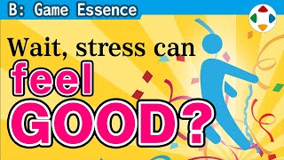
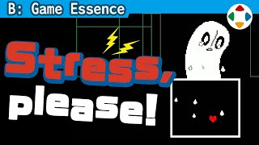
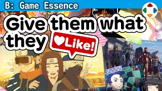
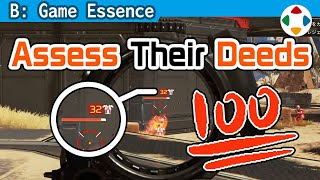
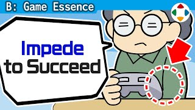

首页 / B 游戏本质
 #110:00
#110:00风险与回报
Risk and Reward樱井把「游戏性」定义为博弈，即风险与回报：在压低风险的同时获得回报的乐趣；攻略则是压低风险获得回报的方法。

#22:40施压与释放
Squeeze and Release游戏的快感来自「施加压力再释放」；别把压力像杂草一样拔掉，释放后再给能更有效释放压力的回报。
 #32:37
#32:37RPG 的游戏性
Game Essence in Role-Playing GamesRPG 的游戏性举两例：探索中「深入危险地带还是回去」的风险回报，以及战斗中观察敌人、找弱点、用同样战力打出更好结果的攻略。
 #46:49
#46:49游戏性之外的乐趣
Fun Beyond Game Essence游戏的乐趣 ≠ 游戏性。樱井列举 7 类不主要依靠游戏性的乐趣：操作、冒险/文字、影像与故事、版权作品、现实再现、建造、音游；它们与游戏性之间没有明确边界。
 #54:51
#54:51恶魔之釜
The Fiend's Cauldron《新·光神话 帕尔提娜之镜》的「恶魔之釜」：投入红心提高「认真度」，难度越高回报越大，失败会自动降低难度——用风险与回报做难度选择。
 #62:49
#62:49让玩家「钻空子」
Let Players Cheat the System攻略就是玩家想办法少吃亏、多得益的玩法；游戏里那些一边倒占便宜的「小作弊」常常最好玩、最难忘，范围内的空子应当容许。
 #72:33
#72:33「会坠落」才卖得出飞翔感
Falling Sells the Feeling of Flight想表现自由飞翔的快感，先加入坠落和惩罚等相反的要素；有风险、有地形可撞，穿越时才会觉得爽。

#83:18真的需要敌人吗？
Do We Really Need Enemies?游戏乐趣来自「压力→释放→成长→进展」；敌人可以去掉，但相当于敌人的压力与释放必不可少，最好积极加入成长与进展。
 #92:43
#92:43先想好回报
Consider Rewards First打倒敌人或完成任务时的回报不可或缺，是推动玩家前进的欲望之源；搭好骨架后最先考虑回报，并让「获得」与「消费」成套。
 #104:02
#104:02对战游戏一定要复杂吗？
Do Competitive Games Have to Be Complex?只有一种拳的格斗游戏无法博弈；招式与规则让游戏变深，《街霸 II》给众多招式恰当分工。广度与深度难以兼顾，每次开发都要重新审视系统和规则。
 #112:48
#112:48落块解谜的游戏性
Game Essence in Falling-Block Puzzle Games拼图类没有博弈，《俄罗斯方块》有，区别在于风险与回报：越堆越高是风险，消行降低风险，一次多消更爽；理解原理，即使不擅长也能快速构思。
 #122:28
#122:28被打倒反而松了一口气？
Dying Comes as a Relief?研究发现对战 FPS 中打倒对手时感到不安、被打倒时反而安心；赢家和输家都觉得好玩，才是最好的娱乐，对战不等于压制的快感。
 #132:39
#132:39登山不只是爬坡
Mountain Climbing Is More Than Just Climbing角色强度与敌人强度不要成正比直线上升；要像真实登山一样有起伏——设置需要攻略的难关并给回报，也留出平坦、能赚的地方。
 #142:56
#142:56让重试快一点
Make Retries Quick失误后的重开要尽量迅速：玩家在「完了」之后到能再次操作之间会迅速冷却；短而有力地表现失败，再尽快把操作权交还玩家。
 #154:21
#154:21你的游戏值得一再重来吗？
Is Your Game Appealing Enough to Start Over?「失败就重来」的永久死亡/Roguelike 机制适合独立游戏，但玩家需要「想看后面」的动机；没有魅力和变化，没人愿意一直重复同样的游玩。
 #162:42
#162:42射击游戏的游戏性
Game Essence in Shooting Games用《Darius》和《Gradius》说明射击游戏的风险与回报：越靠近敌人连射越强、回报越大；地形与武器的一长一短扩展了游戏性。
 #174:02
#174:02游戏性越高，大众性越低
More Game Essence Means Less Broad Appeal提高游戏性会降低大众性：初代《星之卡比》故意降低风险（吸入、体力制、随时飞行）来照顾初学者；风险越低回报也越低，要按目标人群取舍。
 #184:56
#184:56升龙拳指令
The Shoryuken Command「→↓↘＋拳」的升龙拳指令在风险与回报上设计得近乎完美：输入过程就是从靠近对手、无法防空到全身无防御的最大危机，然后爆发出对空技。
 #193:15
#193:15排行榜的利与弊
The Pros and Cons of Leaderboards排行榜能给目标感、帮匹配找实力相近的人，但也会带来「永远没到第一」的屈辱；《大乱斗》用「世界战斗力」这种逆向排名和 VIP 房间来缓解。
 #203:50
#203:50什么是「游戏（玩耍）」？
What is “Play”?介绍罗歇·凯卢瓦《游戏与人》的四要素：竞争（Agon）、偶然（Alea）、模拟（Mimicry）、眩晕（Ilinx）；樱井说的「博弈」主要对应竞争，并谈他对玩耍的看法。

#213:49版权游戏首先要忠于原作
Faithfulness Comes First in Licensed Games版权/角色游戏常被说不如普通游戏好玩，这很自然：原作会束缚游戏设计。它最需要的是像原作、回应粉丝的喜爱，游戏性的优先级较低。
 #222:58
#222:58动作游戏的游戏性
Game Essence in Action Games列举动作游戏中的六种风险与回报：跳跃、冲刺、靠近才能攻击、射击、回避（招架）、躲藏——危险与机会都是一体两面。
 #233:36
#233:36让「工作」类游戏变好玩
Making "Work" Games Fun汽车修理、Cookie Clicker、房屋翻新、高压清洗等几乎没有博弈却让人停不下来的游戏，共同点是：取材现实、能赚、让人默默沉迷，以及偶尔的「浪费时间」感。
 #242:47
#242:47总比打不通关好
Better Than Not Being Able to Beat the Game游戏在胜负边缘最有宣泄感，但花几十小时却因最后太难而通不了关，必须避免；在不带屈辱感的范围内提供某种救济手段，至少能在游戏中途改难度。
 #252:08
#252:08指定攻略与攻略平衡
Mandatory Strategies and Strategic Balance制作者精心设计的「固定攻略」与「自由攻略」各有优劣，都是正确的游戏形态；不要照搬，而要瞄准自己的方向，配合系统取平衡。
 #262:55
#262:55策略游戏的游戏性
Game Essence in Strategy Games从「战力」看策略游戏：同等战力相撞多半打平，像石头剪刀布的克制关系加上成本与特性差异，让玩家用战略改变组合以压倒对手；也可用攻击范围产生博弈。

#272:41玩家做得有多好？
How Good Were the Player’s Actions?决定难度、奖励和惩罚时，以「玩家做了多好（或多坏）的事」为基准：成果与失败都应被恰当反映，但做过头会让游戏变圆滑，偶尔打破常规更刺激。
 #282:52
#282:52优点和缺点都要放大
Amplify Both Strengths and Weaknesses平衡调整时削强项、补短板是「毁灭之路」，会让角色趋同、失去个性；要保留凹凸，让每个角色强弱分明，用攻击力以外的参数来调整。

#292:34调平衡时给自己加个让分
Give Yourself a Handicap When Balancing Your Game开发者熟悉游戏，按自己「勉强能过」来调难度一定太难；最好请不熟悉的人试玩，或给自己加让分（单手玩等），把难度调得比想象中更低。